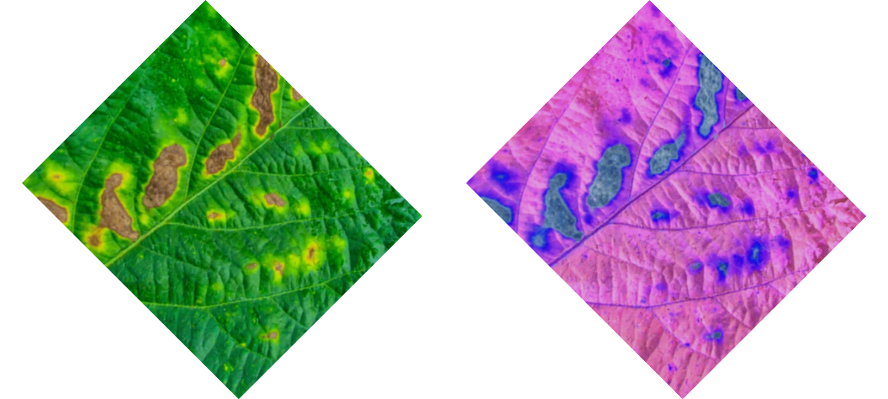
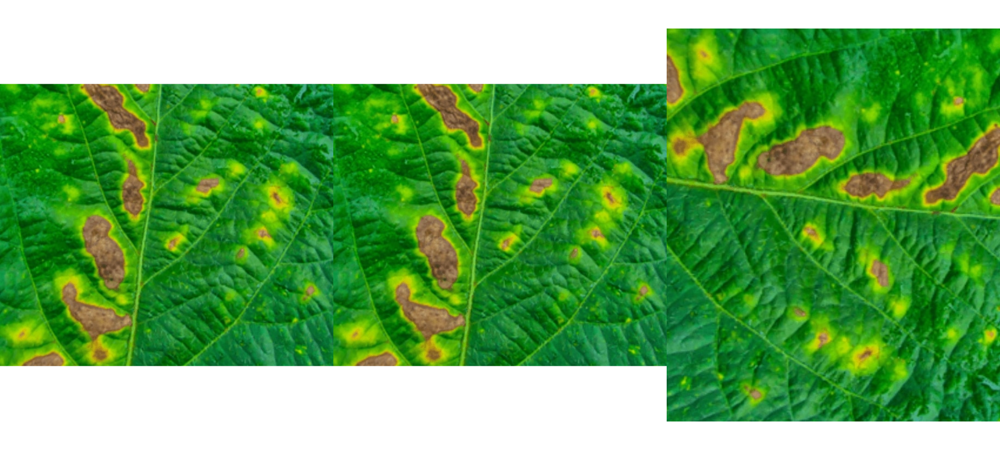

Image manipulation with pliman
Tiago Olivoto
2021-05-10
manipulation.Rmdpliman provides useful functions to perform image transformation of unique images or list of images based on the EBImage package.
library(pliman)
#> |===========================================|
#> | Tools for Plant Image Analysis (pliman) |
#> | Author: Tiago Olivoto |
#> |===========================================|
img <- image_import(image_pliman("sev_leaf_nb.jpg"))
img_neg <- max(img) - img
img_list <- list(img = img, img_neg = img_neg)
image_dimension(img_list)
#>
#> ----------------------
#> Image dimension
#> ----------------------
#> image width height
#> img 720 610
#> img_neg 720 610
image_combine(img_list)
Rezise an image
image_resize() is used to resize an image. The argument rel_size can be used to resize the image by relative size. For example, setting rel_size = 50 to an image of width 1280 x 720, the new image will have a size of 640 x 360. This is useful to speed up the time of analysis such as those computed with count_objects and symptomatic_area().
resized <- image_resize(img_list, rel_size = 50)
image_dimension(resized)
#>
#> ----------------------
#> Image dimension
#> ----------------------
#> image width height
#> img 360 305
#> img_neg 360 305Rotate an image
image_rotate() is used to rotates the image clockwise by the given angle.
rotated <- image_rotate(img_list, angle = 45)
image_combine(rotated)
Horizontal and vertical reflextion
image_hreflect() and image_vreflect() performs vertical and horizontal reflection of images, respectively.
img_hrefl <- image_hreflect(img)
img_vrefl <- image_vreflect(img)
image_combine(img, img_hrefl, img_vrefl, ncol = 3)
Horizontal and horizontal conversion
image_horizontal() and image_vertical() converts (if needed) an image to a horizontal or vertical image, respectively.
img_h <- image_horizontal(img)
img_v <- image_vertical(img)
image_combine(img, img_h, img_v, ncol = 3)